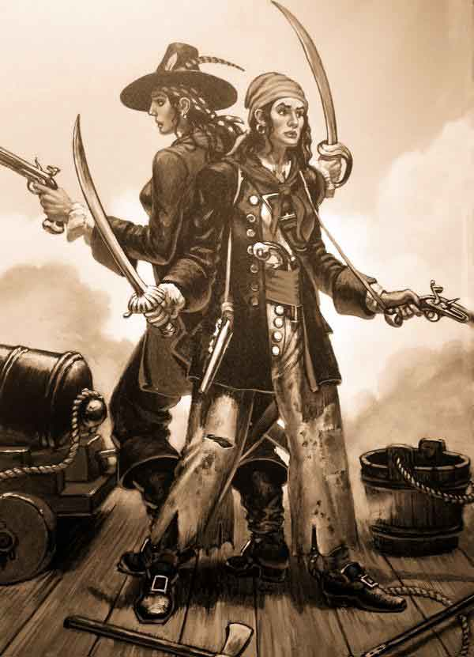

Mary Read
Biography
Much of what we know of Mary Read comes from Capt. Charles Johnson's book written in 1724 called A General History of the Robberies and Murders of the Most Notorious Pyrates. Apparently, Read's mother was married to a sailor, with whom she had a son. The sailor deserted Read's mother, so she had an affair that resulted in Mary. When her half-brother died, Mary was disguised as the dead son, in order to money from his paternal grandmother. The elderly woman died when Mary was 13, yet she continued to dress as a boy. She worked as a servant, and later served in the military. During her time in the military, she met a soldier and revealed her true sex, later marrying him. They then opened an inn near Breda, Netherlands, but her husband died.
Read reverted back to living as a man, and ended up finding work as a sailor. Once her ship was seized by pirates, she decided, or may have been forced, to follow a life of piracy. With her crew mates, she sailed to Nassau, Bahamas around 1717. After, she joined a pirate ship captained by John "Calico Jack" Rackham. Among the crew was Anne Bonny, who did not disguise herself as a man, except during battles. Read continued to masquerade as a man, but others would soon realize that she was a woman. Bonny learned of Read's true sex, when the pirate tried to seduce Read. Mary informed Anne that she was a woman, and Bonny swore to keep Read's secret. The women became incredibly close confidants. Some believe that Anne Bonny and Mary Read were lovers, while others believe they were just very close friends. The two women earned a reputation for ruthlessness.During battles, Anne and Mary fought side by side, wearing "billowing jackets and long trousers and handkerchiefs wrapped around their heads, wielding a machete and pistol in either hand." They were active on board the ship, and willing to do anything that would help.
According to many sources, Mary fell in love with a carpenter on Rackham's ship. When his life was challenged in a duel with a pirate, the protective Read intervened, forcing a duel with the other man and killing him. On the night of October 22, 1720, their ship was attacked by the governor's vessels. Most of the crew had passed out from a night of drinking, but a few, Rackham, Bonny, and Read included, managed fight back. The enemy captain, Jonathan Barnett, ordered the pirates to surrender. Anne and Mary refused to give up, even when Rackman signaled for a surrender. The two women remained on deck and faced the governor's men alone.
Eventually, they were overpowered and taken prisoner to Port Royal. On November 28, she and Anne stood trial and pleaded not guilty for all charges. The two were found guilty and sentenced to be hanged, but their executions were stopped, since they were both pregnant. In April of 1721, Read died in prison, after reportedly developing a fever; Bonny was eventually freed.